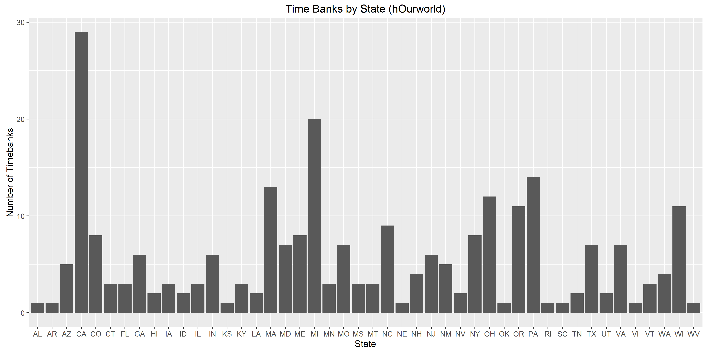
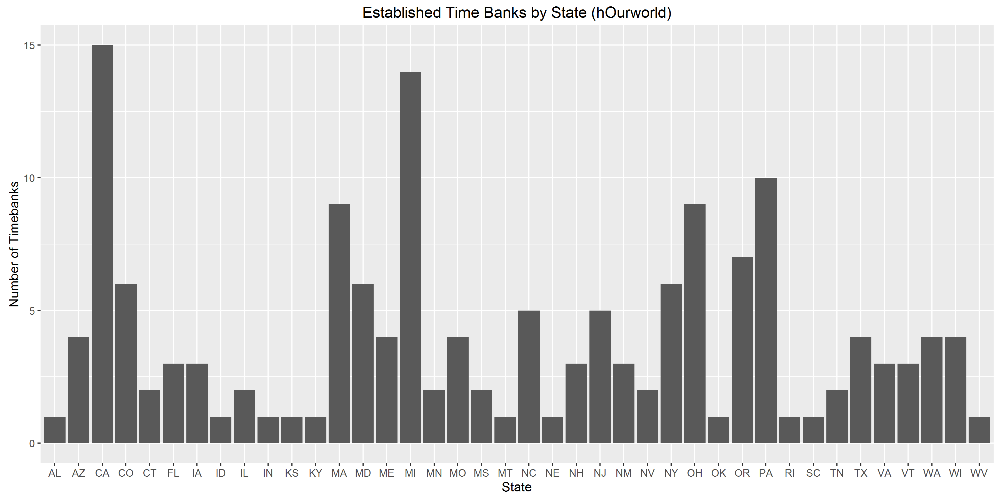

Overview of hOurworld and the Associated Time Bank Initiatives
Background of hOurworld

Because many time bank initiators lack the experience in building and managing a solidarity economy initiatives, while few have the coding skill to produce an operating software to document and organize the amount of time being exchanged, start-up time banks often need formal training, consulting and technical support for them to be launched successfully. As a result, while the partnerships with for-profit businesses, non-profit organizations and other solidarity economy initiatives may significantly increase the socioeconomic benefits that time banks can bring to their members, the non-governmental institutions that have the most immediate impact over the success of time banks are the time bank networks. In the United States, the two most prominent networks are TimeBanks USA and hOurWorld. While Timebanks USA is arguably one of the main actors that introduced the notion of time banking to many communities, the software system developed by hOurworld is now more widely among time bank initiatives due to lower costs, and it will be the main focus of this project.
NA
The General Profile of Time Banks Associated with hOurworld
Currently there are more than 200 time bank initiatives associated with hOurworld. Most of them became a member of the association after the 2008 financial crisis. The emotional and economic anxiety associated with the financial crisis, as well as the ideological incentive of seeking an economic alternative, might be some of the key reasons that lead to this sudden increase of popularity. In addition, the recent conversion of hOuworld’s software platform Community Weaver from free to pay-to-use may also account for the increase in membership of hOurworld in recent years
Fig.1 The year which time banks associated with hOurworld are founded
In terms of the geographic pattern, while time bank initiatives are scatter accross the United States, they are mostly concentrated in some states in the North East, MidWest and the West Coast, and see only limited operational scale elsewhere. The following figures showcases the general distribution pattern of time banks associated with hOurworld by states: 
This pattern remains true for established time banks that are launched before 2016 and at least have 10 hrs of exchange in history: 
Xu, Haitong 2016